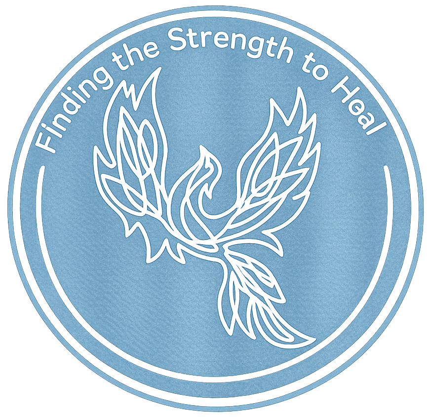

0+
Peer-reviewed publications since 2021
A Temple University public health research lab focused on trauma recovery, gender-based violence, and building more supportive systems for survivors.

The lab's footprint, at a glance. Updated as new work goes to press.
A look at what the lab is putting into the world right now.
A small team with a big network — researchers, clinicians, and students working alongside survivors and partners.
Hover any prompt to explore a map of survivor-centered resources.